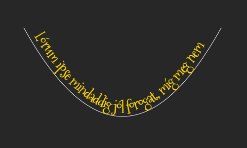

QuadraticText
Library for drawing text to HTML5 canvas along a quadratic curve path.
See the Pen Canvas quadratic curve path text by Gabriella Szilvasy (@lemurx) on CodePen.
Usage
- Add quadratic-text.js to your page.
<script src="quadratic-text.js"></script> - Create a canvas element..
<canvas id="canvas-1" width="500" height="500"></canvas> -
Create a QuadraticText instance.
let options: QuadraticTextOptions = { canvas: '#canvas-1', font: '30px Verdana', textColor: 'gold', curveColor: 'transparent', curveStart: new Point(50, 290), curveEnd: new Point(450, 290), control: new Point(250, 650), align: 'center', text: "Hello" }; let qt = new QuadraticText(options);
Options
-
canvas
default: 'canvas'
The selector of the canvas element. -
font
default: '24px Arial'
Font settings in the format of the canvas font property. (i.e. 'italic small-caps bold 12px arial')
Note: Drawing the text on the canvas may happen before the font is completely loaded (depending on font loading time). In these cases creating the QuadraticText instance or calling the setText method has to be delayed for a few milliseconds. -
textColor
default: 'black'
The color of the text. -
curveColor
default: 'transparent'
The color of the curve. -
curveStart
default: new Point(20, 50)
The start point of the curve on the canvas.
Note: the Point class is defined in the library. -
curveEnd
default: new Point(280, 50)
The end point of the curve on the canvas.
Note: the Point class is defined in the library. -
control
default: new Point(150, 150)
The control point of the curve on the canvas.
Note: the Point class is defined in the library.

-
align
default: 'left'
The alignment of the text. Either 'left' or 'center' (right alignment is not implemented).
Methods
-
setText(text)
Clears the canvas and draws the text passed to the method on it.
let qt = new QuadraticText(options); qt.setText ("hello"); -
addText(text)
Draws the text passed to the method on the canvas without clearing the canvas.
let qt = new QuadraticText(options); qt.addText("Hello");